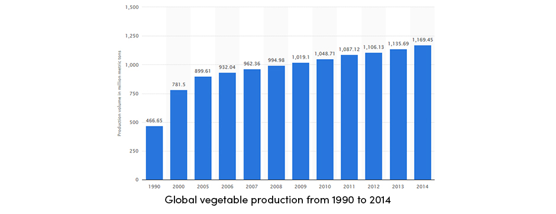

Vegetable Farming
Yashwini Hajdu
Vegetable farming is a type of crop production intended primarily for human consumption of the crop's edible parts such as the shoot, leaves, fruits, and roots. According to the consume part of the crop, vegetables are divided into the following groups:
- Leaf vegetables (lettuce, cabbage, spinach)
- Fruit vegetables (pepper, cucumber, tomato)
- Root vegetables (carrot, radish, sweet potato)
- Bulb vegetables (garlic, onion, fennel)
- Flower vegetables (artichoke, cauliflower, broccoli)
Global vegetable crop production has consistently increased in recent years. The growth of vegetable production is shown in the table below.
Despite the fact that vegetable farming is a labor-intensive practice, it’s very popular among farmers as a high-income branch of farming. The secret to vegetable farming profitability lies in its high market price of crops, as well as in high demands for vegetables year-round. Moreover, growing of vegetables is a preferable farm practice in developing and food-insecure countries. Since vegetables are rich in vitamins, minerals, and fibers, they play an important role in diet improvement.